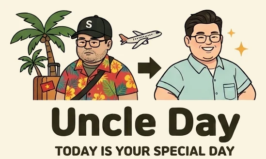

엉클데이 Uncle Day — 베트남 마사지 · 스파 · 뷰티 한국어 예약
엉클데이(Uncle Day)는 베트남 다낭 · 나트랑 · 호치민 · 하노이에서 마사지, 스파, 피부관리, 성형·피부과, 네일 업체를 한국어로 상담하고 예약하는 서비스예요. 엉클데이가 직접 확인한 업체만 소개하고, 예약 시간 · 가격 · 위치를 한국어로 안내해 드려요. 방문 후에는 실제로 다녀온 손님만 후기를 남길 수 있어요.
- 📍 도시별 모아보기: 다낭 · 나트랑 · 호치민 · 하노이 마사지 · 스파 · 뷰티
- 💆 스파 · 발 마사지 · 아로마 · 핫스톤 · 피부관리 · 네일
- 💬 카카오톡 없이도 사이트 안에서 바로 한국어 채팅 상담
자주 묻는 질문
- 엉클데이는 어떤 서비스예요?
- 베트남 다낭 · 나트랑 · 호치민 · 하노이의 마사지, 스파, 피부관리, 성형 · 피부과, 네일 업체를 한국어로 상담하고 예약하는 서비스예요.
- 엉클데이로 예약하면 돈을 더 내나요?
- 아니요. 엉클데이를 통해도 매장 가격 그대로예요. 손님이 엉클데이에 내는 추가 요금은 없고, 결제는 시술 후 매장에서 직접 해요.
- 예약은 어떻게 하나요?
- 업체 페이지에서 예약을 요청하거나 사이트 채팅 · 카카오톡으로 한국어 상담을 해요. 엉클데이가 매장에 확인한 뒤 예약을 확정해 드려요.
- 로그인 없이 예약을 확인할 수 있나요?
- 네. 예약번호와 예약할 때 쓴 정보로 로그인 없이 예약을 확인할 수 있어요.
- 후기는 믿을 수 있나요?
- 엉클데이 후기는 실제로 예약하고 방문한 손님만 남길 수 있어요.
Uncle Day — book trusted massage, spa and beauty shops in Da Nang, Nha Trang, Ho Chi Minh City and Hanoi. Đặt lịch massage, spa và làm đẹp uy tín tại Việt Nam.